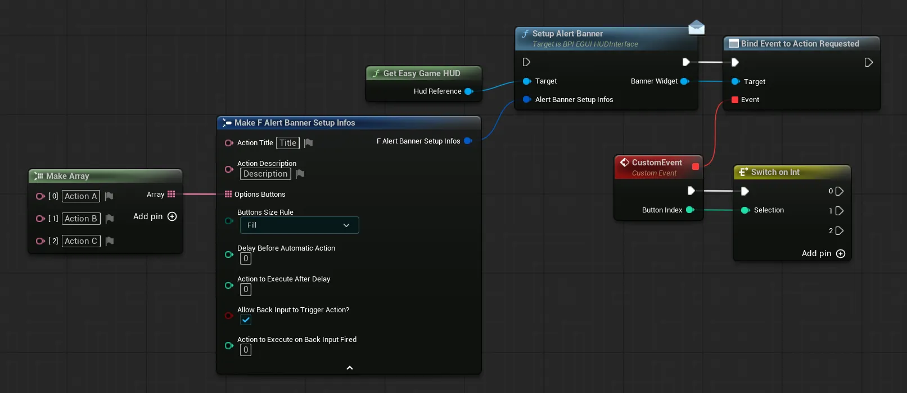
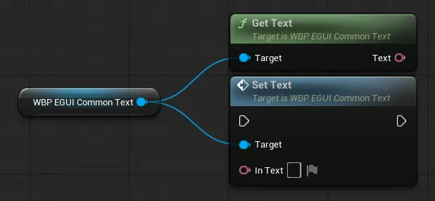
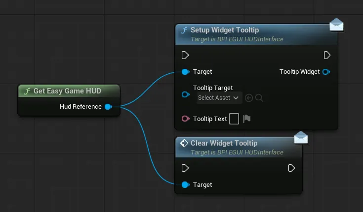

模块化控件系统¶
资源包中包含的所有控件都使用了可复用、易于集成和修改的“Common Widgets”。这些控件位于 EasyGameUI/Core/CommonWidgets 下，可用于构建你自己的任意控件
如果你想要更改布局或其他任何内容，欢迎随意调整这些控件！这些控件的样式由 全局样式系统 控制
以下指南介绍了基础设置，以及在你自己的系统中使用这些控件的各种技巧
警报横幅
警报横幅¶
此控件可用于向用户显示带有多个可选操作的警报（例如确认某个操作）
可以通过在 HUD 中调用 Setup Alert Banner 函数来触发警报横幅，如下例所示：
Alert Banner Setup Infos 引脚允许你使用以下变量配置警报横幅
Action Title/Action Description需要玩家确认的操作的标题和描述Options Buttons玩家可执行的所有操作的数组Buttons Size RuleDefine the size of the buttons
Fill所有按钮大小相同，但如果文本过长可能会被裁剪Automatic文本不会被裁剪，但按钮会有不同的大小Delay Before Automatic Action自动为玩家选择操作前的延迟秒数（0 = 无限期）Action To Execute After Delay延迟到期后要执行的操作索引（来自选项按钮列表）（如果 delay > 0）Allow Back Input To Trigger Action?如果为 true，玩家可以按下 "Back" 输入（默认是 Escape / 手柄右侧面按键）来触发一个操作，这对于 "Cancel" 操作很有用Action To Execute On Back Input Fired当玩家按下 "Back" 输入时要执行的操作索引（如果允许）
要基于所选按钮执行逻辑，你可以将事件绑定到 Action Requested 调度器，并使用按钮索引引脚来获知请求了哪个操作（索引基于选项按钮列表）
你可以在位于 EasyGameUI/DemoContent 文件夹中的 WBP_EasyExampleWidget 控件中找到完整的警报横幅设置示例
背景
背景¶
此控件可用作其他 UI 元素的简单背景和容器
-
Init by Code Only?如果为 True，背景的样式不会自动初始化，你需要调用背景上的Init Styling函数如果你希望在运行时修改样式变量，这会很有用
-
Normal Style Selector/Active Style Selector背景从 全局样式 中定义的所有样式里所使用的样式Active Style Selector仅在背景控件上调用Set Background Active函数时使用
-
Corner Rounding Type背景圆角的类型，可在固定和半高度之间选择。如果为固定，所使用的值可在全局样式中控制 -
Slot Padding/Slot Alignment面板内内容相对于背景的内部内边距和对齐方式
背景图像
背景图像¶
此控件可用于快速在你的控件内容后方设置背景图像

在控件配置中，你可以控制图像和/或背景颜色的显示，以及图像和背景所需的画刷
你也可以在蓝图中使用 Update Background Image 函数更改背景图像

按钮
按钮¶
此控件可用于任何需要按钮触发操作的地方，并内置了正确的 UI 导航支持。你可以为每个按钮配置许多变量：
Fully Disable Button如果为 True，按钮将被禁用并从视图中隐藏，这对于快速禁用/启用按钮很有用。你也可以使用Request Button Visibility函数来更新按钮的可见性，同时考虑此禁用按钮变量（仅在按钮未被禁用时更新可见性）Init By Code Only?如果为 True，按钮不会自动初始化，你需要调用Init Button函数来初始化控件的样式。如果为 False，样式将在控件创建后立即设置
Text 类别包含有关按钮显示文本的所有样式和配置，例如对齐方式、变换策略、内边距和字体
Button 类别包含控制按钮行为的各种变量
Is Active?按钮默认是否处于激活状态（例如对标签页很有用），按钮在每次被点击时都会被设为激活状态Always Reset Active State?如果为 True，按钮在点击后始终会恢复为Is Active?= False 状态，这会重置样式并允许用户再次点击该按钮-
Search For Siblings?如果为 True，按钮会搜索同一容器中的其他按钮，以影响它们的激活状态，并允许每个容器中只有一个按钮处于激活状态。如果为 False，将跳过此搜索，该按钮不会影响任何其他按钮，这也能节省一些性能。
-
Mouse Press Method/Gamepad Press Method使用鼠标或手柄时触发按钮所需的方式
Button Styling 类别包含控制按钮样式的各种变量
Button Style定义按钮应使用 全局样式 中的哪种样式Prefered Rounding Type按钮应使用半高度半径还是固定半径。当 全局圆角类型定义为固定 时，此变量会被忽略Focus SFX/Hover SFX/Click SFX按钮在悬停、聚焦和点击时触发的声音效果。基于 全局样式 中定义的 UI SFXButton Horizontal Alignment/Button Vertical Alignment相对于其父项的对齐方式-
Selection Indicator Position控制用于显示按钮是否被悬停或聚焦的指示器的位置右侧放置

底部放置

你还可以访问按钮的多种事件：
页眉
页眉¶
此控件可用作页眉，以便在多个标签页之间快速切换，例如配合控件切换器使用
Tabs Definition该数组定义要显示的标签页列表，每个标签页由一个可本地化的显示名称、一个静态唯一名称（可在代码中用于识别）以及一个简单的布尔值组成，该布尔值用于在需要时显示这个特定的标签页Default Active Tab定义默认激活的标签页（基于标签页列表）-
Manually Select Initial Tab?若为 True，则Default Active Tab会被忽略，此时你需要从头部调用Select Initial Tab函数来设置最初选中哪个标签页
-
Loop Navigation若为 True，使用Go To Previous Or Next Tab函数向前/向后切换时，导航会循环进行 Widget Switcher Ref可选，用于引用一个可由头部控制的控件切换器（关联后，切换器的索引将由头部自动控制）-
Display Title Only若为 True，所有按钮都会被隐藏，只显示当前激活按钮的标题。这对于更紧凑的 UI 很有用注意
若为 True，你需要提供其他切换标签页的方式，例如使用头部控件中的
Go to Previous or Next Tab函数来选择下一个和上一个标签页的按钮
-
Display Active Tab Indicator?若仅显示标题，将此设为 True 会在标题下方显示一个激活标签页指示器 Styling下的变量定义头部、按钮、文本等的全局样式，全部基于全局样式变量，如 按钮 或 文本 控件中所述
该控件还有一个 New Tab Selected 事件，每当选中某个标签页时就会触发，并提供所选标签页的索引、显示名称以及唯一名称（与区域设置无关的名称）


文本
文本¶
该控件可用作任意位置所需的简单文本，以便轻松获得全局样式

在该控件的配置中，你可以设置文本及其各种样式设置
Text用于定义所显示文本的简单字段Text Styling文本使用的字体、转换策略和对齐方式，基于 全局样式 参数Font Material Override允许你定义文本将使用的字体材质Wrap Text?若为 True，允许文本在需要时自动换行Init by Code Only?若为 True，文本输入和文本样式值将在构建时被忽略，你可以在需要时使用Update Font Infos或Update Text Styling函数初始化文本
你还可以使用 Get Text / Set Text 函数来获取或更新控件显示的文本

富文本
富文本¶
该控件可用作任意位置所需的富文本，以便轻松获得富文本的全局样式与设置。你可以在 Unreal 文档 中详细了解富文本

在该控件的配置中，你可以设置文本及其各种样式设置
Text用于定义所显示文本的简单字段Text Styling文本默认使用的字体、转换策略和对齐方式，基于 全局样式 参数Rich Text Style Set定义可使用哪些字体设置来为文本设置样式Rich Text Decorator Classes定义可以为文本添加哪些额外的“装饰”，例如图标、图片等。默认情况下，富文本带有一个可用于显示输入图标的装饰器。你还可以查看 输入提示系统 以了解输入类富文本Init by Code Only?若为 True，文本输入和文本样式值将被忽略，你可以使用Update Font Infos或Update Text Styling函数初始化文本
你还可以使用 Get Text / Set Text 函数来获取或更新控件显示的文本

可编辑文本框
可编辑文本框¶
该控件可用作玩家的文本输入框

在该控件的配置中，你可以调整与可编辑文本框输入相关的多个变量以及它的样式。
-
Init by Code Only?若为 True，文本、提示文本和文本字体值将被忽略，你可以在需要时使用Update Font Infos函数初始化文本：
-
Text定义默认应写入该字段的任何文本 Hint Text定义仅作为“覆盖层”显示的文本，一旦用户与文本框交互，该文本就会被清除Read Only?若为 True，用户只能读取文本输入内容，无法键入Password Protected若为 True，输入的文本会像密码字段一样被隐藏-
Charaters Limit文本字段允许的最大字符数（0 = 无限） -
在
Styling类别下，你可以通过更改背景、对齐方式、字体等来调整文本框的样式 -
还提供了多个函数和事件，用于从文本框接收数据并更新它


滚动框
滚动框¶
该控件可用作基本的滚动框，适用于任何需要滚动的长内容

滚动框带有自动滚动功能，对于长文本等某些内容很有用
-
Auto Scroll?若为 True，将在此滚动框上启用自动滚动功能 -
Auto Scroll Speed自动滚动的速度，以每个 tick 滚动量的百分比表示，因此 0.2 表示每个 tick 滚动总高度的 2% -
Delay Between Auto Scrolls定义滚动框到达末尾或开头后，需要多久才会向相反方向滚动
工具提示
工具提示¶
该控件可用作简单的工具提示，在执行操作前向玩家提供更多信息

可以通过在 HUD 上调用 Setup Widget Tooltip 函数来触发工具提示，如下例所示：

Tooltip Target 是悬停时会显示工具提示的控件（例如按钮），Tooltip Text 定义工具提示将显示的内容
选项说明
选项说明¶
该控件可用于显示一组标题/说明/图片，为 UI 的某些部分提供更多细节，例如设置说明或存档文件预览。

在该控件的配置中，你可以控制标题和说明文本所使用的字体、转换策略和对齐方式。如果只想显示控件的说明部分，也可以隐藏标题。
你还可以使用
Update Setting Description函数从代码更新所显示的说明
- 前三个变量用于显示文本
Image to Display变量可以填入任意纹理，理想情况下应保持 16:9 比例Keep Current Description?若为 true，当前显示的描述将被保留，并显示在新定义的描述下方

选择器按钮
选择器按钮¶
此控件可用于简单的“上一个/下一个”选择操作，例如在设置或照片图库中。箭头纹理通过 全局样式（Global Styling） 定义

在此控件配置中，你可以调整若干与选择器按钮外观相关的设置
Image Size箭头图像的像素尺寸Selector Rotation Angle箭头默认指向的角度Image Padding需要在图像周围额外添加的内边距Button Style底层按钮应使用 全局样式 中定义的哪种样式Selection Indicator Position与 Button 相同，用于控制指示按钮是否被悬停或聚焦的小条的位置Prefered Rounding Type按钮应使用半高圆角还是固定圆角。使用全局样式中的全局圆角参数时，此项会被忽略
然后你可以使用 Button Clicked 事件执行任意操作